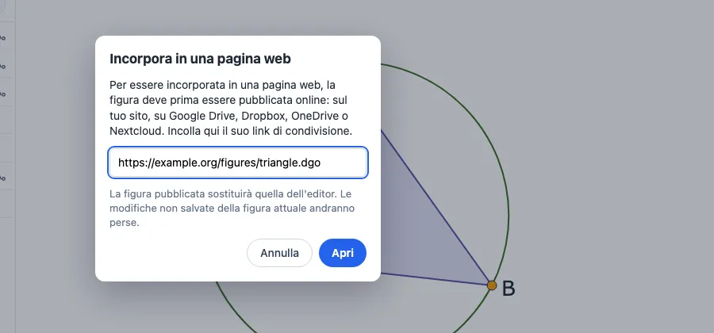
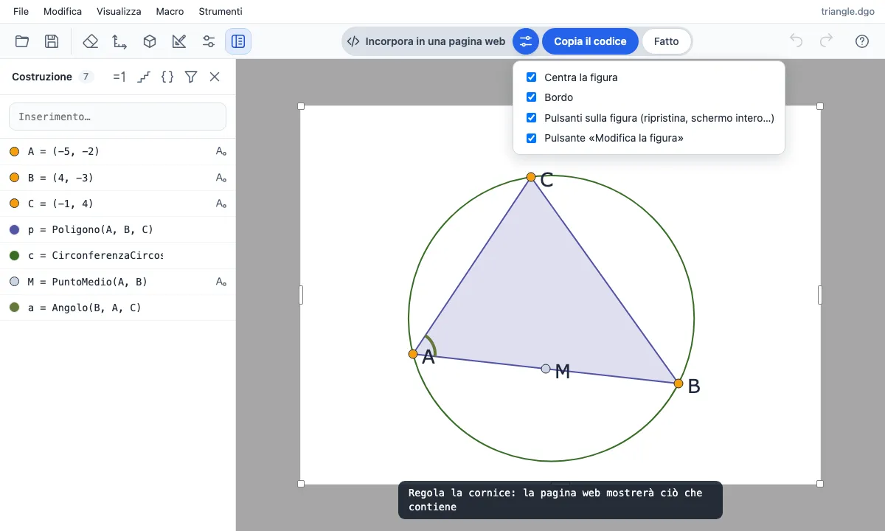

Incorporare in una pagina web
Una figura DocGeo può essere mostrata in qualsiasi pagina web — il tuo sito, un corso Moodle, un blog — e manipolata lì come in DocGeo. Basta incollare nell’HTML della pagina un codice preparato dall’editor. La figura si adatta alla larghezza della pagina, anche su un telefono.
Il principio
La pagina non contiene la figura: a ogni visualizzazione la legge là dove l’hai pubblicata online. Quindi:
- la figura deve prima essere messa online, come per condividerla tramite un link;
- per aggiornare la pagina basta sostituire il file pubblicato: tutte le pagine che la incorporano mostrano subito la nuova versione, senza toccare il loro codice.
Passo dopo passo
-
Salva la figura (Ctrl S), poi metti il
file
.dgoonline: sul tuo sito, su Google Drive, Dropbox, OneDrive o Nextcloud. Copia il suo link di condivisione. -
Scegli File › Incorpora in una pagina web….
Se la figura non è stata aperta dal suo link, DocGeo lo
chiede: incollalo e fai clic su Apri. La
figura pubblicata sostituisce allora quella dell’editor, il
che garantisce che il codice funzionerà.

- Sulla figura appare una cornice: la pagina mostrerà esattamente ciò che contiene. Le sue maniglie (angoli e punti medi dei lati) la ridimensionano, i suoi bordi e la sua etichetta la spostano. Per inquadrare puoi anche zoomare, spostare la vista o ruotare una figura 3D; la figura resta manipolabile.
-
Regola le opzioni se serve, con il pulsante a sinistra di
Copia il codice.

- Fai clic su Copia il codice, poi incolla questo codice nell’HTML della tua pagina.
- Fatto o Esc toglie la cornice.
Le opzioni
| Opzione | Effetto |
|---|---|
| Centra la figura |
racchiude il codice in
<center>: la figura è
centrata nella pagina.
|
| Bordo | una sottile linea grigia intorno alla figura. |
| Pulsanti sulla figura | una piccola barra in alto a destra della figura, visibile quando il mouse ci passa sopra: ripristinare la figura, mostrarla a schermo intero. |
| Pulsante «Modifica la figura» | aggiunge a questa barra un pulsante che apre la figura nell’editor, in una nuova scheda. Da deselezionare, per esempio, perché gli studenti non vedano la costruzione. |
Tutte le opzioni sono selezionate all’inizio; le tue scelte restano fino alla chiusura dell’editor.
Il codice da incollare
Il codice copiato è simile a questo:
<center><iframe
src="https://…/index.html?fit=704,512,…&url=https://…/triangle.dgo"
style="width:704px;max-width:100%;aspect-ratio:704/512;border:1px solid #ccc"
allow="fullscreen" loading="lazy"></iframe></center>
Per cambiare la dimensione della figura nella pagina, modifica
solo width, in pixel: l’altezza segue e la figura
conserva le proporzioni della cornice. Su uno schermo più
stretto, come quello di un telefono, si riduce da sola
(max-width:100%). Modifica
aspect-ratio solo per dare un’altra forma allo
spazio della figura, che vi resta intera e centrata. I numeri
dopo fit= descrivono ciò che mostra la figura, non
la sua dimensione: non modificarli.
Incolla il codice dove la pagina accetta HTML: nel file
.html stesso, in un blocco «HTML personalizzato» di
WordPress o nella modalità HTML (codice sorgente) dell’editor di
testo di Moodle.
Nella pagina
La figura vi si manipola come in DocGeo: punti, slider, caselle, pulsanti… Trascinare in una zona vuota sposta la vista, o la ruota in 3D. La rotellina fa scorrere la pagina, come ovunque; per zoomare la figura usa Ctrl + rotellina, o pizzica sul touchpad.
Allargare due dita per ingrandire la figura e avvicinarle per ridurla. Trascinare entrambe le dita insieme per spostare la vista.
I pulsanti in alto a destra ripristinano la figura (come la pagina l’ha aperta), la mostrano a schermo intero e, se l’opzione è selezionata, la aprono nell’editor.

Aggiornare una figura incorporata
Apri la figura nell’editor dal suo link (per esempio con il pulsante «Modifica la figura» della pagina), modificala e salvala, poi sostituisci il file pubblicato nello stesso posto, mantenendo il suo link: su Google Drive, caricando una nuova versione del file; su Dropbox, OneDrive o Nextcloud, mettendo il nuovo file con lo stesso nome nella stessa cartella. Tutte le pagine che incorporano la figura mostrano allora la nuova versione, senza cambiare il loro codice.
Per cambiare solo l’inquadratura, scegli di nuovo File › Incorpora in una pagina web… e copia il nuovo codice: il file pubblicato non deve cambiare.
Se la figura è stata modificata nell’editor da quando è stata aperta dal suo link, DocGeo lo ricorda prima di mostrare la cornice: finché il file pubblicato non è sostituito, la pagina mostra la versione precedente.
Se la figura non appare
- Il link deve essere pubblico: accesso «Chiunque abbia il link» su Google Drive, link senza password su Nextcloud.
-
Alcune piattaforme tolgono gli
<iframe>dall’HTML incollato, o li accettano solo per certi siti o certi utenti: controlla le impostazioni della tua. -
Un codice copiato da un DocGeo installato sul tuo computer
(indirizzo
localhost) funziona solo su di esso: copia il codice dall’editor online. -
Il pulsante dello schermo intero appare solo se l’
<iframe>ha l’attributoallow="fullscreen", che il codice copiato contiene.